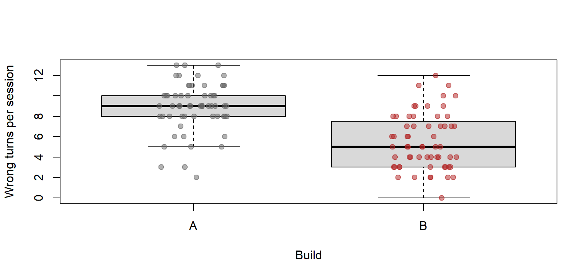
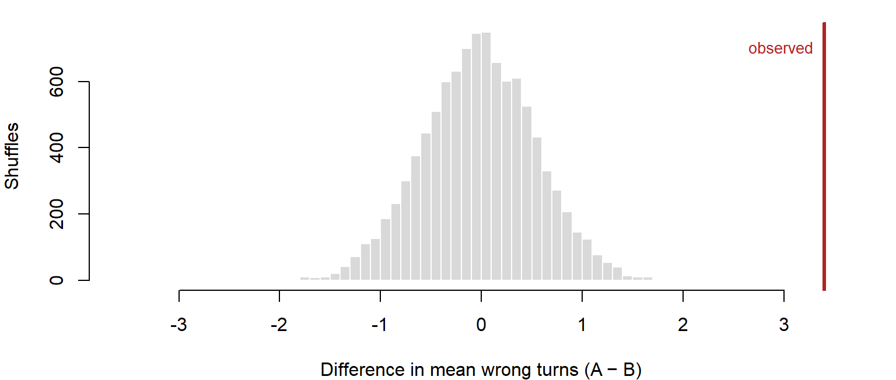
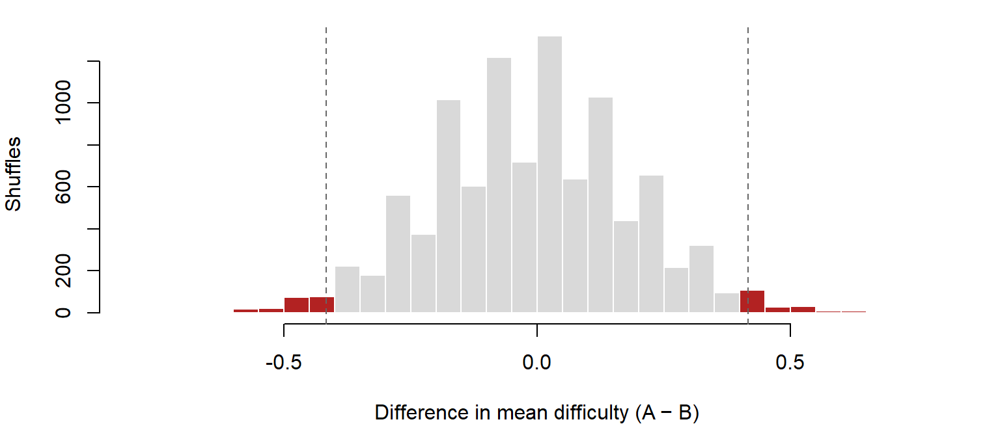

Every build comparison ends with a difference, because two groups of people never produce identical numbers. This page is about the two questions that follow: could the difference be chance? and is it big enough to matter? It builds the idea of a p-value from a simple shuffle, then introduces the t-test, paired designs, and how to write the result as a recommendation. The playtest question running through it: “Did the new signposting reduce wrong turns?”
Stage: 2 · Core. Time: 30 minutes in class; 15 more for the sections marked Useful when needed. Before this:From Sample to Population. Key terms: observed difference, null hypothesis, p-value, significance level, t-test, paired design, effect size, practical significance. R you will write:t.test(y ~ group), t.test(x, y, paired = TRUE), and $estimate, $conf.int, $p.value to pull out the parts.
Learning Outcomes
By the end of these notes you can:
report a comparison in six steps: what happened, how large, how uncertain, could it be chance, does it matter, and what the team should do;
explain a p-value through a shuffle, and say what it is and is not;
run and read an independent-samples t-test and a paired t-test, and choose between them from the design;
tell statistical significance from practical significance;
write an evidence-backed design recommendation from a comparison.
Why This Matters for Playtesting
Build B’s players took fewer wrong turns, or scored more, or quit less. The question is never “is there a difference?” but “is this difference telling me something about the build, or only about the players who happened to turn up?”
A playtest is a sample.From Sample to Population showed that every mean wobbles from one playtest to the next. When you compare two groups, both means wobble, and so does the gap between them. Before you rebuild a level on the strength of a difference, you need to know whether that difference would survive a second playtest.
And a real difference can still be worthless. With enough data, a change too small for any player to notice becomes statistically detectable. A result can be certain and irrelevant at the same time. Deciding whether it matters is a design judgement, and no test makes it for you.
Six Questions, in Order
Every comparison in this course is reported by answering six questions, in this order. It is the What → Pattern → Meaning → Action frame, expanded for a comparison:
Question
What you use
Frame
1
What happened?
Side-by-side plots, a summary per group
Pattern
2
How large was the difference?
The difference, in the measure’s own units
Pattern
3
How uncertain is the estimate?
The 95% confidence interval for the difference
Pattern
4
Could random sampling plausibly explain it?
The p-value
Pattern
5
Does the difference matter to the player experience?
Design judgement
Meaning
6
What should the team do?
A recommendation
Action
Look at the plot before running the test. The test is question 4, not question 1. A p-value with no picture and no size attached cannot be interpreted. If the boxplots show a gap nobody would care about, no p-value changes that (rule 7).
The rest of this page works through the six questions on one result: did Build B’s signposting reduce wrong turns?
What Happened, and How Large?
The Tidebreak team added signposting to Build B. Did players get lost less?
boxplot(wrong_turns ~ build, data = sessions, col = pal$fill, outline =FALSE,ylab ="Wrong turns per session", xlab ="Build")stripchart(wrong_turns ~ build, data = sessions, vertical =TRUE, add =TRUE,method ="jitter", jitter =0.15, pch =19,col =adjustcolor(c(pal$build_a, pal$build_b), alpha.f =0.5))

Figure 1: Build B’s players took fewer wrong turns. The boxes do not overlap, but the individual sessions do.
sessions |>group_by(build) |>summarise(n =n(), mean =mean(wrong_turns), sd =sd(wrong_turns))
# A tibble: 2 × 4
build n mean sd
<chr> <int> <dbl> <dbl>
1 A 60 8.92 2.37
2 B 60 5.52 2.70
Build A’s players averaged 8.9 wrong turns per session and Build B’s 5.5. The observed difference is 3.4 wrong turns: your best single estimate of the true difference, and almost certainly not exactly right. The two boxes do not overlap, but the points do: plenty of individual Build A sessions had fewer wrong turns than plenty of Build B sessions.
Give the size in the measure’s own units. “3.4 fewer wrong turns per session” is something a designer can picture. That is the effect size in its simplest form.
How Uncertain Is It?
A confidence interval for the difference works the same way as the interval for one mean in From Sample to Population. Here it runs from 2.5 to 4.3 wrong turns. You will get it from t.test() in a moment.
Read it as a range of plausible sizes: the signposting saved somewhere between 2.5 and 4.3 wrong turns per session. If an interval includes zero, “no difference” is still plausible; this one is nowhere near zero.
Could It Be Chance? The Shuffle
Suppose the signposting did nothing. Then the build label on each session is arbitrary: each player would have taken the same number of wrong turns whichever build they had been given. So you could shuffle the labels, give every session a random build, and the gap between the “builds” would be just as large as the real one.
That is a test you can run. Shuffle the build labels, recompute the gap, and repeat ten thousand times. The shuffled gaps show what differences chance alone produces. If the real gap looks like them, chance is a fine explanation. If it is far outside them, chance is not. This is called a permutation test.
You do not need to write this code. The idea is what matters: it is what every p-value means.
par(mar =c(4, 4, 1, 1))hist(shuffled_wt, breaks =40, col = pal$fill, border ="white", main ="",xlim =c(-3.6, 3.6), xlab ="Difference in mean wrong turns (A − B)",ylab ="Shuffles")abline(v = gap_wt, col = pal$highlight, lwd =3)text(gap_wt, par("usr")[4] *0.9, "observed", pos =2, col = pal$highlight, cex =0.85)

Figure 2: If the build made no difference, shuffling the labels would produce gaps like the real one. In 10,000 shuffles, chance never came close to the real gap.
The real gap is 3.4. The largest gap in ten thousand shuffles is 2.17.
The proportion of shuffles at least as extreme as the real gap is the p-value. Here not one of ten thousand was, so p is below 1 in 10,000. If the signposting did nothing, a gap this large would essentially never happen.
Most results are less clear-cut. The same shuffle on the 1–7 difficulty rating gives a gap of 0.42 points (Build B rated harder), and 3.9% of shuffles produce a gap at least that large in either direction:
Show the code
lim <-ceiling(max(abs(shuffled_df)) *20) /20+0.05br <-seq(-lim, lim, by =0.05)h <-hist(shuffled_df, breaks = br, plot =FALSE)par(mar =c(4, 4, 1, 1))plot(h, col =ifelse(abs(h$mids) >=abs(obs_df), pal$highlight, pal$fill),border ="white", main ="", xlab ="Difference in mean difficulty (A − B)",ylab ="Shuffles")abline(v =c(obs_df, -obs_df), lty =2, col = pal$line)

Figure 3: The p-value is a tail area: the share of shuffles (shaded) at least as extreme as the observed difficulty gap, in either direction.
That 3.9% is the difficulty p-value. Chance alone produces a gap that size in roughly one shuffle in 26: unusual, but not unheard of.
The Language of Testing
The shuffle has a formal vocabulary.
The null hypothesis is the claim of no difference: here, that the build makes no difference to wrong turns. The shuffle is a simulation of the world where the null is true. The alternative hypothesis is that the build does make a difference.
The p-value is the probability of seeing a difference at least as large as the one observed, if the null hypothesis were true. A small p-value means the data would be surprising in a world where the builds did not differ.
Important
A p-value is not the probability that the null hypothesis is true.
It is calculated by assuming the null is true, so it cannot also measure how likely the null is. p = 0.03 does not mean “a 3% chance the builds are the same”. It means “if the builds were the same, a gap this large would turn up about 3% of the time”.
The significance level, written α (alpha), is the threshold you choose before looking, conventionally 0.05. If p falls below it, the result is called statistically significant: “unlikely to be chance alone”, and nothing more. Choosing it in advance is the same discipline as deciding what would change your mind before you look at the data (rule 1).
Not significant does not mean no difference. A large p-value means this sample could not rule out chance. That can be because there is no difference, or because there were too few players to see one. The confidence interval tells you which.
Going further: the two ways a test can be wrong, statistical power, and why testing many things at once produces false alarms are on Testing in Depth.
The t-Test
Shuffling ten thousand times works, but for comparing two means there is a formula that gives almost the same answer instantly: the t-test. It is what you will use.
result <-t.test(wrong_turns ~ build, data = sessions)result
Welch Two Sample t-test
data: wrong_turns by build
t = 7.3208, df = 116.07, p-value = 3.492e-11
alternative hypothesis: true difference in means between group A and group B is not equal to 0
95 percent confidence interval:
2.480141 4.319859
sample estimates:
mean in group A mean in group B
8.916667 5.516667
t.test(y ~ group) is the independent-samples t-test, for when different players tested each build. Read ~ as “split by”, as in a boxplot. R runs the Welch version by default, which does not assume the two builds have the same spread; that is the right default. Read three parts of the output:
the sample estimates: the two means (questions 1 and 2);
the 95 percent confidence interval: for Build A minus Build B (question 3);
the p-value (question 4).
$ pulls single parts out of the result, which is how you get numbers into a sentence with inline R instead of copying them by hand:
The t-test and the shuffle agree. For wrong turns, both say p is tiny. For difficulty, the shuffle gave p = 0.038 and the t-test gives p = 0.032. The shuffle shows what the p-value means; the t-test is how you will compute it.
Does It Matter? Practical Significance
Practical significance is whether a difference is large enough to change the player’s experience, and so a design decision. Statistical significance cannot tell you this, because it depends on how much data you have as well as on how big the difference is.
Lead with the size. “Build B’s players took 3.4 fewer wrong turns per session (95% CI 2.5 to 4.3).” A designer can judge whether 3 wrong turns matters; nobody can judge a p-value. For your game, the important question is whether the smallest plausible difference, the low end of the interval, is still large enough to matter.
The Atrium shows why. The frame-time capture has 3000 frames from the Atrium zone. There, Build B’s frames are 0.42 ms faster than Build A’s, p < 0.001. That is about as statistically significant as a result gets, and no player can perceive a difference of less than half a millisecond per frame. Nobody should schedule work around it.
Practically small
Practically large
Statistically significant
Real but not worth acting on
Act on it
Not significant
Nothing to see, if the interval is narrow
Test more players: the sample was too small to tell
Always report the size of the difference. “Significant” alone hides which cell of that table you are in.
NoteGoing further: Cohen’s d
When measures are on different scales, a standardised effect size lets you compare them. Cohen’s d divides the difference in means by the typical SD of the two groups:
For wrong turns, d = 1.34: the groups are well over one SD apart. A common rough guide calls 0.2 small, 0.5 medium and 0.8 large, but those labels come from psychology; in a playtest, “large” means large enough to change a design decision, which only the units can tell you.
Independent samples. Different players test each build. That is how the Tidebreak sessions file was collected: 30 players, each of whom played only one build. Use the independent-samples t-test, as above.
Paired. The same players test both builds. tidebreak_paired.csv records a second study in which 30 players each played both. Each player is compared with themselves, so their skill cancels out. Use the paired t-test:
Figure 4: Each line is one player in the paired study. Most lines slope down, and players who took many wrong turns in Build A tend to take many in Build B too.
Paired t-test
data: paired$wrong_turns_a and paired$wrong_turns_b
t = 6.0932, df = 29, p-value = 1.234e-06
alternative hypothesis: true mean difference is not equal to 0
95 percent confidence interval:
1.838014 3.695319
sample estimates:
mean difference
2.766667
paired = TRUE compares each player’s two values. The estimate is the mean difference: on average, a player took 2.8 fewer wrong turns in Build B. 26 of 30 players improved, 2 stayed the same and 2 got worse.
Ignoring the pairing throws away what the design bought you. The same numbers tested as if the players were different people give the same estimate, but the interval is 3.2 wrong turns wide against 1.9 for the paired test. The paired test removes the player-to-player variation; the unpaired test has to allow for it.
Paired designs bring their own problems: learning, order and fatigue effects. If everyone plays Build A first, some of Build B’s improvement is just practice. Counterbalancing fixes it, but tidebreak_paired.csv does not record which build each player played first, so this study cannot rule it out.
For your project: if your team tests a change on the same few players before and after, that is a paired design. Use paired = TRUE, and counterbalance the order if you possibly can.
Comparing Proportions
Not every outcome is a number. “Did the session end in a frustration quit?” is yes or no, and the comparison is between two proportions: 20 of 60 Build A sessions (33%) against 5 of 60 in Build B (8%).
prop.test() takes the counts of “yes” and the group sizes:
frus <- sessions |>group_by(build) |>summarise(frustrated =sum(quit_reason =="Frustrated"), n =n())frus
# A tibble: 2 × 3
build frustrated n
<chr> <int> <int>
1 A 20 60
2 B 5 60
prop.test(frus$frustrated, frus$n)
2-sample test for equality of proportions with continuity correction
data: frus$frustrated out of frus$n
X-squared = 9.9032, df = 1, p-value = 0.00165
alternative hypothesis: two.sided
95 percent confidence interval:
0.09506413 0.40493587
sample estimates:
prop 1 prop 2
0.33333333 0.08333333
The difference is 25 percentage points, with a 95% interval from 10 to 40 points, p = 0.002. Build A’s frustration rate is higher, and even the low end of the interval is a difference a designer would care about. The same six questions, for a yes/no outcome.
Checking the Assumptions
A t-test is reliable when these hold closely enough. None needs a formal test; each needs a look.
Assumption
What it means
How to check
Tidebreak
Independence
One observation does not influence another
Think about how the data was collected
Each player contributed 4 sessions, so the 120 sessions are really 30 players
No strong outliers
No few values dominate the means
Boxplots
3 flagged wrong-turn counts across 120 sessions
Roughly normal
One hump, no long tail; matters less with a few dozen per group
A histogram
Fine for wrong turns; not for frame times
Appropriate design
Independent test for separate groups, paired test for the same people
How the playtest was run
Sessions: independent. Paired file: paired
A t-test compares means, so it is the wrong tool when the mean is the wrong summary. Frame times are the example: the problem is in the tail, as Distributions and Shape showed.
The independence problem has a simple check. Average each player’s sessions into one value, then compare players rather than sessions:
That leaves 30 players instead of 120 sessions. .groups = "drop" just tidies the result. The difference is the same and the interval is a little wider, 2.4 to 4.4, because there are fewer independent observations. The conclusion survives.
Which Test?
flowchart TD
S["Plot both groups"] --> Q1{"Yes/no or<br/>a number?"}
Q1 -->|Yes/no| P(["prop.test()"])
Q1 -->|A number| Q2{"Same players<br/>in both?"}
Q2 -->|Yes| PT(["Paired t-test"])
Q2 -->|No| Q3{"Mean the right<br/>summary?"}
Q3 -->|Yes| IT(["Independent t-test"])
Q3 -->|"No: heavy tail"| PM(["Compare the tail<br/>by permutation"])
class S accent
Figure 5: Choose the test from the outcome and the design, after you have looked at the data. A heavy tail means the mean is the wrong thing to compare.
The last branch is rare in playtests, and the Testing in Depth page shows how to do it.
Worked Example
Did the signposting reduce wrong turns, without costing enjoyment? The six questions, in order.
1. What happened?Figure 1: Build B’s box sits lower. Build A’s median is 9 wrong turns and Build B’s is 5. The boxplot flags 3 outlying sessions in Build A and 0 in Build B, too few to dominate either mean.
2. How large? 8.9 against 5.5: a difference of 3.4 wrong turns per session.
3. How uncertain? The 95% confidence interval is 2.5 to 4.3 wrong turns. Nowhere near zero.
4. Could it be chance? p < 0.001, and no shuffle in ten thousand came close. It also survives counting each player once, and the separate paired study points the same way.
5. Does it matter? The smallest plausible reduction, 2.5 wrong turns per session, is still large enough for a player to feel. And it did not cost enjoyment: the enjoyment difference is p = 1, with an interval from -0.35 to 0.35 points on a 7-point scale, so any change is under half a point either way.
6. What should the team do? Keep the signposting.
In the report you would write:
Players using Build B made fewer wrong turns than players using Build A: on average 3.4 fewer per session (95% CI 2.5 to 4.3, p < 0.001). A difference this large is very unlikely to be sampling variation alone. More importantly, even the smallest plausible reduction is large enough to improve navigation, and enjoyment did not change (95% CI for the difference -0.35 to 0.35 points). The team should keep the revised signposting.
Was Build B harder? The same steps on the 1–7 difficulty rating give a second significant result. Build B was rated 0.42 points harder, p = 0.032, with a confidence interval from 0.04 to 0.8 points.
Three things say not to act on it. The size is small: under half a point on a seven-point scale. The interval’s lower end, 0.04, is a difference no player would report. And the play data does not back it up: deaths did not differ between the builds (p = 0.679). Statistically significant, practically marginal, and unsupported by what players actually did. What should the team do? Note it, and check it in the next playtest.
Interpretation Guidance
What the data shows. In this playtest, Build B’s players averaged 3.4 fewer wrong turns per session than Build A’s (95% CI 2.5 to 4.3, p < 0.001). In a separate study where 30 players played both builds, they took 2.8 fewer in Build B (95% CI 1.8 to 3.7).
What the analysis suggests. The signposting helps players find their way, and by enough to matter. Two different designs, with different players, point the same way.
What can legitimately be concluded. The reduction is very unlikely to be chance, and even its smallest plausible size is a noticeable improvement. The paired study cannot separate the signposting from practice, because play order was not recorded; the independent study does not have that problem, which is why the two together are stronger than either alone.
“The result was significant” is not a finding. It names no size and no action (rule 10).
Common Mistakes
Reading the p-value as the chance the null is true. It is the chance of data this extreme if the null is true.
Reading “not significant” as “no difference”. It means this sample could not tell. Check the confidence interval: narrow and around zero is evidence of no meaningful difference; wide is a sample too small to say.
Reading “significant” as “important”. The Atrium frame times are among the most significant results in the whole playtest and among the least important.
Testing before looking. A t-test on data you have not drawn can hide outliers, skew or two groups mixed together. Plot first, every time.
Using the independent test on paired data. It gives an interval far wider than the data supports. Match the test to the design.
Testing every measure and reporting what came up. Decide which comparisons answer your question before you run any of them. Test enough things and one will come up by luck.
Running too small a playtest and concluding “no effect”. A handful of players per build will often miss even a large effect.
Counting sessions as players. Check that the result survives when each player counts once.
Practice
Each takes two or three minutes.
Predict. If you shuffled the build labels and recomputed the gap in mean enjoyment, would the real gap stand out from the shuffles? Then run the t-test and use the confidence interval to answer: did the signposting cost enjoyment?
Compute. Run the paired data through both the paired and the unpaired t-test. Why is the paired interval narrower?
Decide. Build B’s sessions were longer on average. Run the test on session_minutes. Is the difference statistically significant? Is it practically significant?
Critique. A team tested 12 players, 6 per build, found p = 0.4 for wrong turns, and concluded: “The new signposting has no effect.” What would you tell them?
NoteShow answers
1.
t.test(enjoyment ~ build, data = sessions)
Welch Two Sample t-test
data: enjoyment by build
t = 0, df = 113.42, p-value = 1
alternative hypothesis: true difference in means between group A and group B is not equal to 0
95 percent confidence interval:
-0.3483742 0.3483742
sample estimates:
mean in group A mean in group B
3.933333 3.933333
No: the p-value is 1, so the real gap looks exactly like the shuffles. The interval says more: it runs from -0.35 to 0.35 points on a seven-point scale, so any true difference is smaller than half a point either way. That is evidence the signposting did not cost enjoyment, a stronger statement than “not significant”.
Players who take many wrong turns in one build take many in the other. The paired test compares each player with themselves, so that player-to-player variation drops out. The unpaired test leaves it in and has to allow for it.
3.
t.test(session_minutes ~ build, data = sessions)
Welch Two Sample t-test
data: session_minutes by build
t = -2.1091, df = 114.42, p-value = 0.03711
alternative hypothesis: true difference in means between group A and group B is not equal to 0
95 percent confidence interval:
-5.7142078 -0.1791255
sample estimates:
mean in group A mean in group B
21.29500 24.24167
Statistically, yes: p = 0.037. Practically, it is hard to say. The interval says Build B’s sessions were 0.2 to 5.7 minutes longer: anywhere from 11 seconds to 5.7 minutes. The direction is clear and the size is not, which is a case for a larger playtest rather than a decision. (Session length is also two-humped in Build A, so a difference in means hides how the builds differ; the retention curve in Distributions and Shape shows it.)
4. With 5 sessions per build, even an effect as large as Tidebreak’s is detected only about 44% of the time, and 6 is not much better. So p = 0.4 is what you would often see whether or not the signposting works. “No effect” is not supported. They should report the difference and its confidence interval, which will be wide, and run a larger or paired playtest. Testing in Depth shows where that number comes from.
Summary
Report a comparison in six steps: what happened, how large, how uncertain, could it be chance, does it matter, what should the team do. Plot before you test.
A shuffle (permutation test) shows what differences chance produces. The p-value is the share of shuffles at least as extreme as the real result.
A p-value is how surprising the data would be if there were no difference. It is not the probability that there is no difference.
The t-test is how you compute it for two means: t.test(y ~ group) for different players, paired = TRUE for the same players.
Lead with the size of the difference and its interval. Statistically significant means unlikely to be chance; practically significant means big enough to matter to the player.
End with what the team should do.
Key term
Meaning
Observed difference
The gap between the groups in your sample
Permutation test
Shuffling group labels to see what differences chance produces
Null hypothesis
The claim of no difference
p-value
The chance of a difference at least this large if the null were true
Significance level (α)
The p-value threshold chosen in advance, usually 0.05
Effect size
How big the difference is, in the measure’s units or standardised
t-test
The standard test for a difference in means
Paired design
The same players measured under both conditions
Practical significance
Whether a difference is big enough to change the player’s experience
Links
Ten Rules: rule 1 (decide what would change your mind before you look), rule 7 (compare distributions, not averages), rule 8 (small samples lie confidently) and rule 10 (a finding that does not name an action is not finished)
Testing in Depth: errors and power, multiple comparisons, Q-Q plots, a shuffle for any summary
Build B’s difficulty rating was significantly higher, but deaths did not change. What would you need to see in the next playtest to take the difficulty result seriously?
A colleague says the paired study proves the signposting works because its p-value is smaller. What is wrong with that argument, and what does the paired study add that the sessions data does not?
You can afford 30 testers for the next build comparison. Would you run them as two independent groups of 15 or as one paired group of 30? What would you have to control in the paired design?
Pick a change your team made to your own game this term. Write the six questions you would answer to decide whether it worked, and the measure you would use for each.